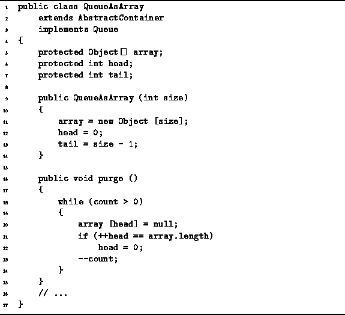

Data Structures and Algorithms
with Object-Oriented Design Patterns in Java
Data Structures and Algorithms
with Object-Oriented Design Patterns in Java
The definitions of the QueueAsArray class constructor
and purge methods are given in Program  .
The constructor takes a single parameter, size,
which specifies the maximum number of items that can be stored in the queue.
The constructor initializes the fields as follows:
The array field is initialized to an array of length size
and the head and tail fields,
are initialized to represent the empty queue.
The total running time for the QueueAsArray
constructor is O(n), where .
.
The constructor takes a single parameter, size,
which specifies the maximum number of items that can be stored in the queue.
The constructor initializes the fields as follows:
The array field is initialized to an array of length size
and the head and tail fields,
are initialized to represent the empty queue.
The total running time for the QueueAsArray
constructor is O(n), where .

Program: QueueAsArray constructor and purge methods.
The purpose of the purge method is to remove all the contents
of a container.
In this case, the objects in the queue occupy contiguous
array positions between head and tail.
To empty the queue,
the purge method walks through the occupied array positions
assigning to each one the value null as it goes.
Clearly, the running time for the purge method is O(n),
where  .
.
 Copyright © 1998 by Bruno R. Preiss, P.Eng. All rights reserved.
Copyright © 1998 by Bruno R. Preiss, P.Eng. All rights reserved.